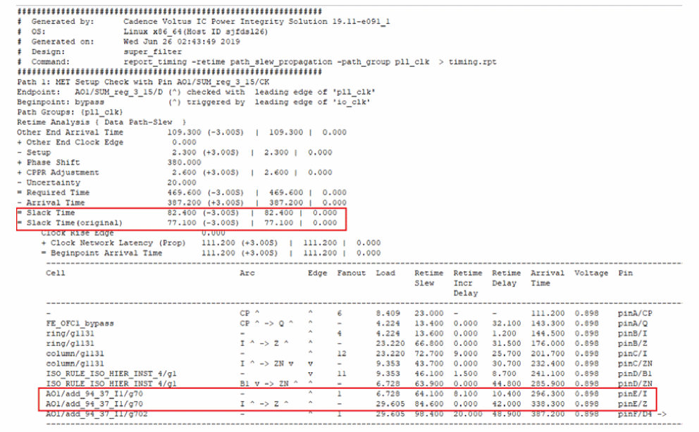
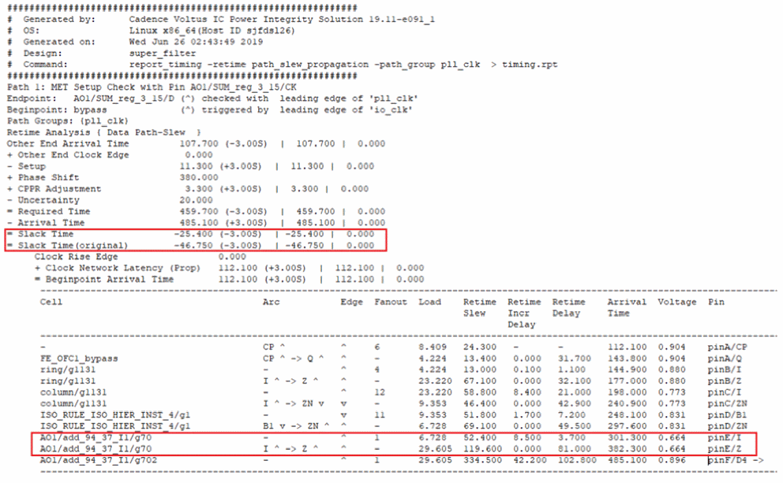
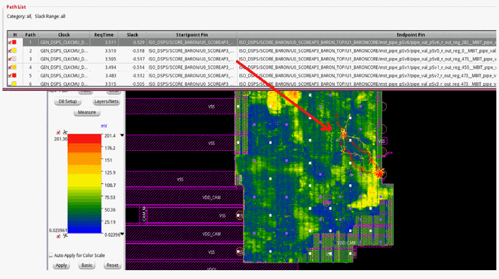

Tempus PI Result Analysis and Reporting
You can analyze the timing reports generated from the traditional timing signoff and the Tempus PI flows to determine the instances in the high IR drop region. When you compare the timing reports in the following snapshots, you will observe that the timing path that had positive slack in the traditional analysis flow has negative slack in the Tempus PI analysis flow:
Worst-case Path Analysis (Traditional)

Worst-case path analysis (Tempus PI)

The following snapshot shows the top five register2register critical paths (Timing SI -> Debug Timing menu option) and the corresponding IR drop heat map (Power Rail -> Power Rail Plots menu option):

Return to top